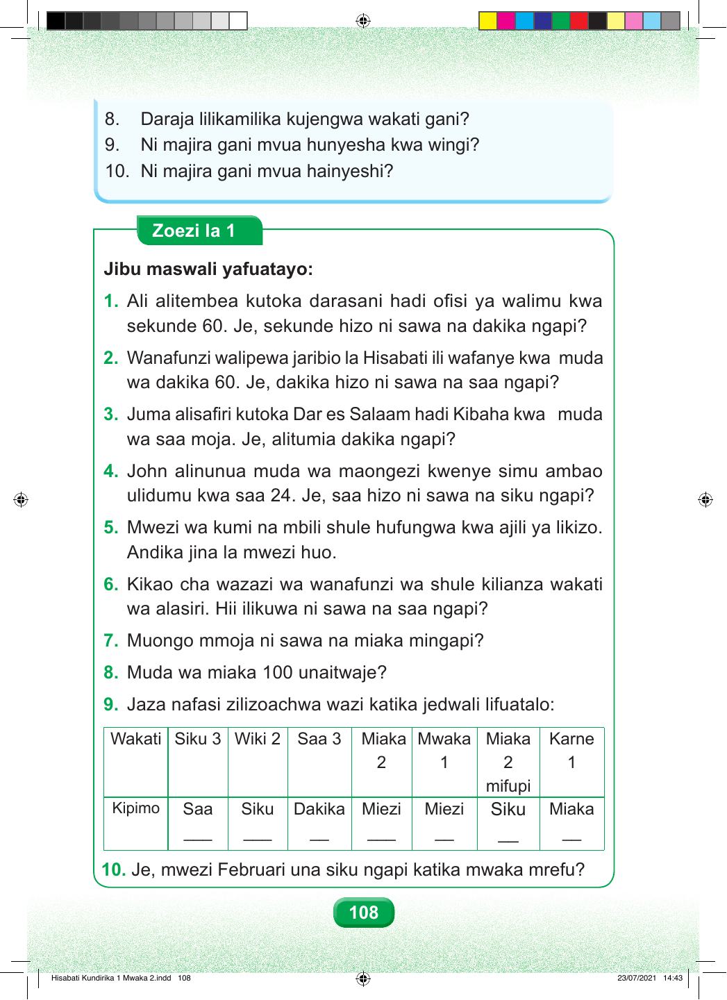

Swali namba nane. Daraja lilikamilika kujengwa wakati gani? Swali namba tisa. Ni majira gani mvua hunyesha kwa wingi? Swali namba kumi. Ni majira gani mvua hainyeshi? Zoezi la Kwanza Jibu maswali yafuatayo. Swali namba moja. Ali alitembea kutoka darasani hadi ofisi ya walimu kwa sekunde sitini. Sekunde hizo ni sawa na dakika ngapi? sekunde 60. Je, sekunde hizo ni sawa na dakika ngapi? Swali namba mbili. Wanafunzi walipewa jaribio la Hisabati la dakika sitini. Dakika hizo ni sawa na saa ngapi? wa dakika 60. Je, dakika hizo ni sawa na saa ngapi? Swali namba tatu. Juma alisafiri kutoka Dar es Salaam hadi Kibaha kwa saa moja. Alitumia dakika ngapi? wa saa moja. Je, alitumia dakika ngapi? Swali namba nne. John alinunua muda wa maongezi uliodumu saa ishirini na nne. Saa hizo ni sawa na siku ngapi? ulidumu kwa saa 24. Je, saa hizo ni sawa na siku ngapi? Swali namba tano. Mwezi wa kumi na mbili shule hufungwa kwa likizo. Andika jina la mwezi huo. Andika jina la mwezi huo. Swali namba sita. Kikao cha wazazi kilianza alasiri. Hii ni sawa na saa ngapi? wa alasiri. Hii ilikuwa ni sawa na saa ngapi? Swali namba saba. Muongo mmoja ni sawa na miaka mingapi? Swali namba nane. Muda wa miaka mia moja unaitwaje? Swali namba tisa. Jaza nafasi zilizoachwa wazi katika jedwali lifuatalo. Jedwali lina safu saba. Safu ya kwanza: siku tatu ni sawa na saa ngapi? Safu ya pili: wiki mbili ni sawa na siku ngapi? Safu ya tatu: saa tatu ni sawa na dakika ngapi? Safu ya nne: miaka miwili ni sawa na miezi mingapi? Safu ya tano: mwaka mmoja ni sawa na miezi mingapi? Safu ya sita: miaka miwili mifupi ni sawa na siku ngapi? Safu ya saba: karne moja ni sawa na miaka mingapi? Swali namba kumi. Mwezi Februari una siku ngapi katika mwaka mrefu? 108 Hisabati Kundirika 1 Mwaka 2.indd 108 23/07/2021 14:43